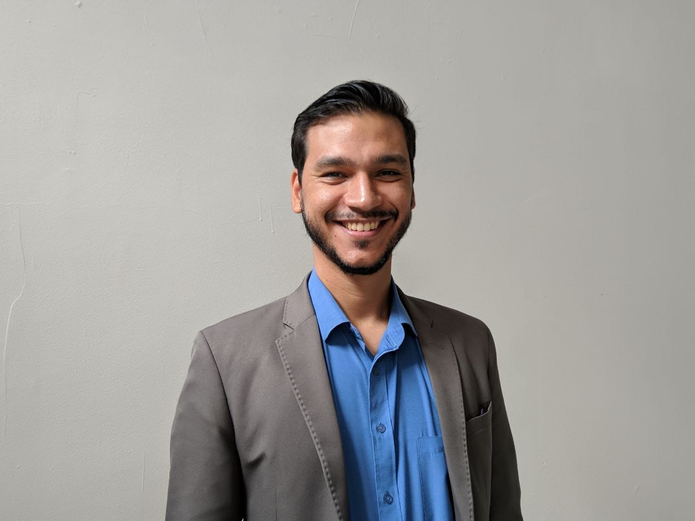
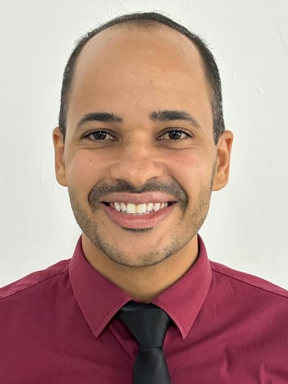
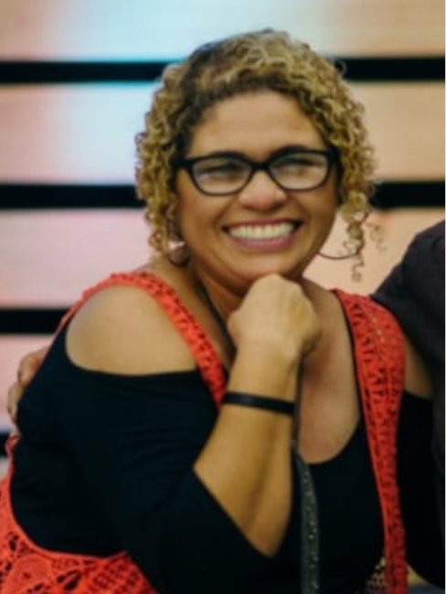

Preletores

Rev. Christopher Vicente
Ministro do Evangelho na Igreja Presbiteriana do Brasil, pastoreando, efetivamente, a Igreja Presbiteriana Manancial do Natal (Natal-RN). Bacharel em História pela Universidade Federal do Rio Grande do Norte. Mestrando em Divindade pelo Internacional Reformed Theological College. Editor da Editora Nadere Reformatie. Casado com Narah e pai de Thomas, Christine e Timóteo.
Ministro do Evangelho na Igreja Presbiteriana do Brasil, pastoreando, efetivamente, a Igreja Presbiteriana Manancial do Natal (Natal-RN). Bacharel em História pela Universidade Federal do Rio Grande do Norte. Mestrando em Divindade pelo Internacional Reformed Theological College. Editor da Editora Nadere Reformatie. Casado com Narah e pai de Thomas, Christine e Timóteo.

Rev. Sérvulo Silva
Ministro do Evangelho na Igreja Presbiteriana do Brasil, pastoreando, efetivamente, a Igreja Presbiteriana Pedras Vivas (Recife-PE). Graduado em Teologia pelo Seminário Presbiteriano do Norte e pela Universidade Católica de Pernambuco. Plantador de igreja há 15 anos. Casado com Thais e pai de André, Darah e Hadassa.
Ministro do Evangelho na Igreja Presbiteriana do Brasil, pastoreando, efetivamente, a Igreja Presbiteriana Pedras Vivas (Recife-PE). Graduado em Teologia pelo Seminário Presbiteriano do Norte e pela Universidade Católica de Pernambuco. Plantador de igreja há 15 anos. Casado com Thais e pai de André, Darah e Hadassa.

Rev. Relrison Silva
Casado com Ellen e pai de Cecília, Eva e Rute. Pastor da Igreja Presbiteriana de Aldeia. Bacharel em Teologia pelo SPN e Mestre em Pregação pelo Andrew Jumper.
Casado com Ellen e pai de Cecília, Eva e Rute. Pastor da Igreja Presbiteriana de Aldeia. Bacharel em Teologia pelo SPN e Mestre em Pregação pelo Andrew Jumper.

Josiane Figuerêdo
Casada com Jorge Figuerêdo, mãe de dois e avó de três. Missionária do Palavra da Vida há 14 anos. Especializada pela Associação Brasileira de Conselheiros Bíblicos. Desenvolve seu ministério com Aconselhamento Bíblico há 20 anos.
Casada com Jorge Figuerêdo, mãe de dois e avó de três. Missionária do Palavra da Vida há 14 anos. Especializada pela Associação Brasileira de Conselheiros Bíblicos. Desenvolve seu ministério com Aconselhamento Bíblico há 20 anos.